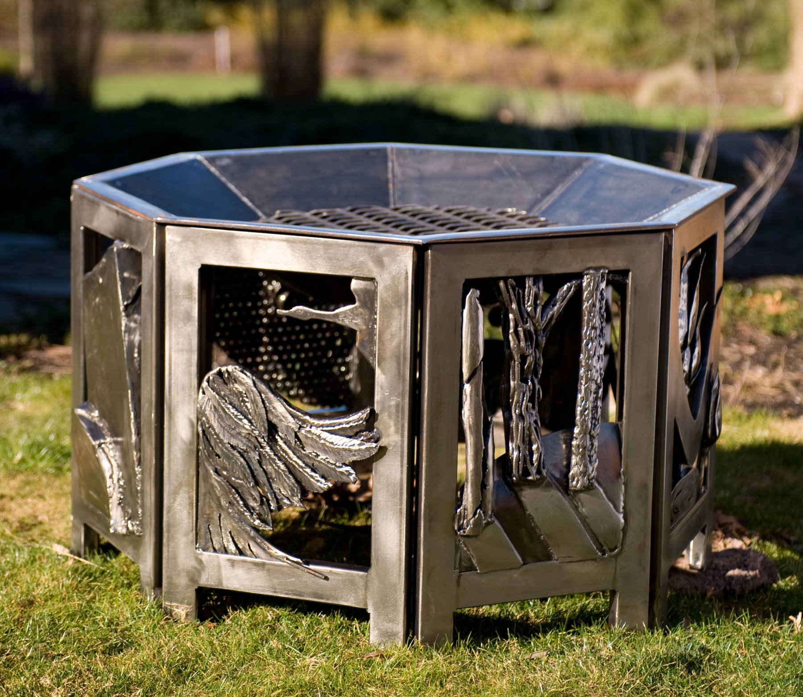
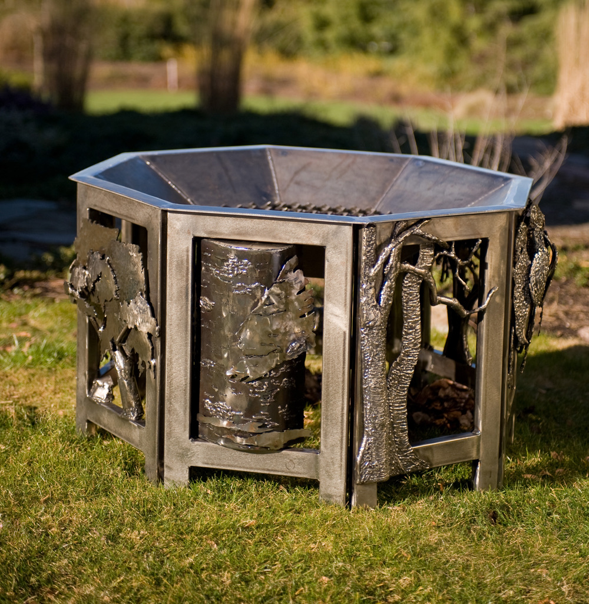

Firepit Series
Fire has always fascinated me, both as a physical source of warmth and as a place around which people gather. In these three firepits, a functional object becomes a circular narrative. Cut-steel forms surround the flame with images of evolution, human connection, and the uneasy relationship between trees and fire.
Interconnected (1st in series)
Mild steel · 36″ × 36″ × 36″ · 2008

More views


Interconnected brings together five faces representing the diversity of the world's peoples. Bands of steel weave the faces together, beginning, breaking, and resuming around the circle to suggest both the beauty of human connection and its fragility in a world marked by conflict.
Evolution (2nd in series)
Mild steel · 36″ × 36″ × 27″ · 2009

More views
{kind=link}
{kind=link}
{kind=link}
{kind=link}
The imagery in Evolution traces the movement of life from the oceans onto land. Eight story panels are assembled as four hinged pairs, allowing the surround to fold for off-season storage; only the large fire dish and grate remain separate.
Irony (3rd in series)
Mild steel · 36″ × 36″ × 27″ · 2009

More views
{kind=link}
{kind=link}
{kind=link}
I have long been drawn both to trees and to fire. In Irony, flames consume the wood represented in the surrounding panels, setting the function of the object in deliberate contradiction with its imagery. Like Evolution, its eight story panels are assembled as four hinged pairs for storage.